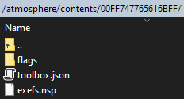

Sys-Tweak
Sys-Tweak is A collection of miscellaneous mitms.¶
The use we need it for is intercepting the displayed game icon, essentially it swaps out the icon shown for a installed title with an icon in our atmosphere cfw
SDMC:/atmosphere/contents/TITLEID/icon.jpg
atmosphere 0.19.0+¶
Build switch-sys-tweak or alternatively use one of the links below of a pre compiled version.
| LATEST VERSION: | Tested on | link up? |
|---|---|---|
| latest version on GBATemp | HOS 16.0.0 - AMS 1.5.2 | |
| p-sam sys-tweak github artifact | [Same as above] | |
| 16BitWonder-Git Repo | Forked Version AMS 1.0.0 |
Sys-Tweak setup:
You need to rename the sys-tweak.nsp to exefs.nsp
Once you've done that place exefs.nsp in SDMC:/atmosphere/contents/00FF747765616BFF
setup this folder structure and contents on your SD card:
SDMC:/atmosphere/contents/00FF747765616BFF/flags/
│ └ boot2.flag
├ exefs.nsp
└ toolbox.json
toolbox.json is a settings file so sys-tweak can be switched off and on in the homebrew menu via a homebrew toolbox
deepsea toolbox
SDMC:/atmosphere/contents/00FF747765616BFF/toolbox.json
{
"name": "sys-tweak",
"tid": "00FF747765616BFF",
"requires_reboot": true
}
boot2.flag should be a empty file!
SDMC:/atmosphere/contents/00FF747765616BFF/flags/boot2.flag
Pre Setup Archive of folder structure without sys-tweak
Alternatively I have the toolbox.json & boot.flag files pre setup here
simply copy the contents to the root of your sd card
you will still need to download and to rename the sys-tweak.nsp to exefs.nsp
once you have finished your sys-tweak folder 00FF747765616BFF it should like similar to this:

Older Version¶
atmosphere 0.18.0
a pre compiled version can be found on GBATEMP to get custom icons working you will need switch-sys-tweak NSAM seems to work better if that crashes try the other version